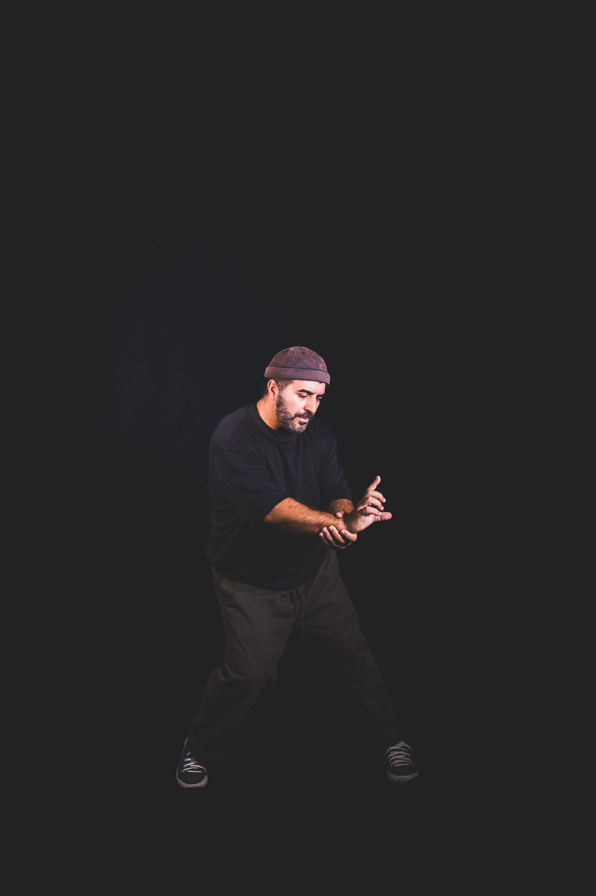

Ifrah Zerarda
Originaire du Vaucluse, Ifrah Zerarda est un danseur hip-hop aux multiples facettes. Il rencontre la danse lors d'un stage avec la compagnie Black Blanc Beur, au milieu des années 90, et se forme en autodidacte dans la plus pure tradition du hip-hop originel.
Écumant les compétitions, il remporte de nombreux titres en battle, en solo comme en équipe, et arpente les festivals de rue durant toute son adolescence. Sa rencontre avec Kader Attou, de la compagnie Accrorap, en 1997, fait naître un véritable attrait pour la création chorégraphique.
En parallèle, il s'essaie au rap et à l'écriture — cette dernière restera une passion jusqu'à aujourd'hui. Il se forme à la pédagogie auprès de l'ADDM d'Avignon en 2003 et dirige une compagnie de jeunes danseurs issus de quartiers prioritaires, qu'il emmènera se produire à l'étranger (Allemagne, Belgique, Espagne, Slovénie…).
Danseur pluridisciplinaire, il découvre la danse contemporaine lors d'une collaboration avec la compagnie Ballet Brosse, et en garde un goût durable pour le croisement des esthétiques. Son parcours l'emmène à Toulouse en 2006, où il intègre Art Dance International et se forme en danse classique, jazz et contemporaine — une expérience qui affine sa vision et confirme son intérêt pour la création.
En 2015, il fonde la compagnie du Cercle des Danseurs Disparus et remporte de nombreux concours chorégraphiques, dont le Concours national des jeunes chorégraphes. La même année, il fonde également l'école du Cercle des Danseurs Disparus.
Acteur majeur de la scène hip-hop toulousaine, il est jury de nombreux concours, donne plusieurs masterclass et dirige de nombreux projets culturels et artistiques — dont pas moins de 7 pièces chorégraphiques professionnelles. Il conçoit aussi des spectacles pour des organismes d'événementiel privés (Airbus, BNP…) et encadre des dispositifs scolaires liés à la danse.
Fort d'une trentaine d'années d'activisme, Ifrah est un professeur très expérimenté qui a à cœur de transmettre les valeurs et la culture de la danse hip-hop. Exigeant et bienveillant, son enseignement, teinté d'une touche poétique, saura vous faire voyager à travers les multiples univers qui sont les siens.